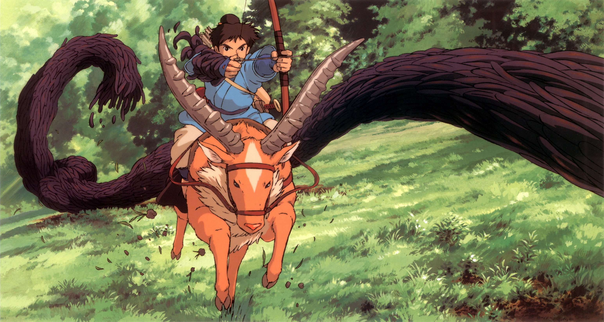
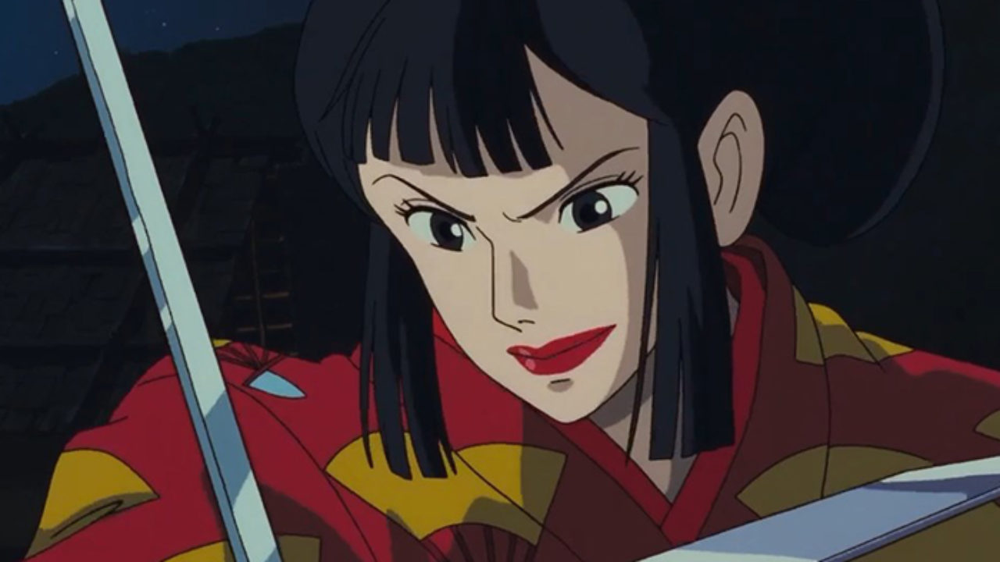
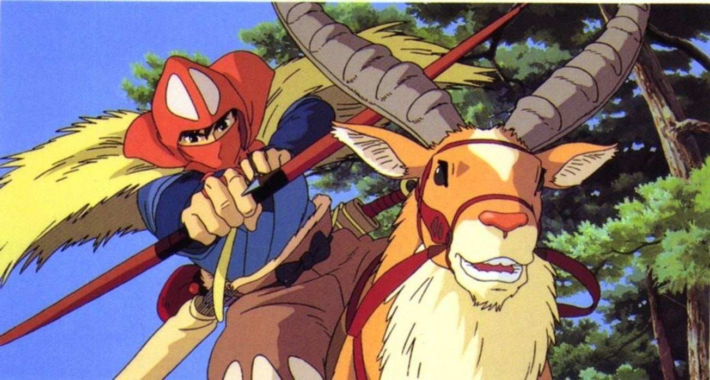
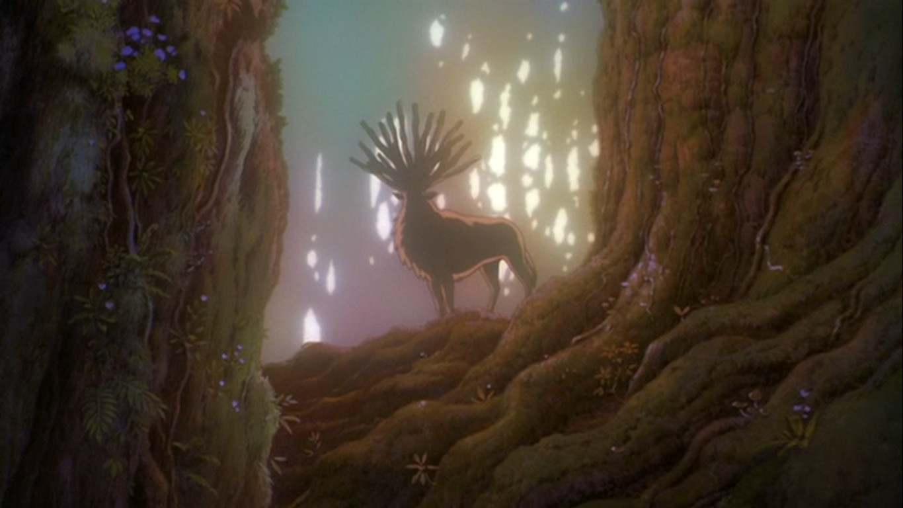

Nada de lo que sucede se olvida.
Nada de lo que sucede se olvida.
La princesa Mononoke
Por A.Baeza
Mononoke es una obra maestra. El cine de Miyazaki alcanza el cénit de madurez y profundidad, en mi opinión, con "Mononoke Hime" o "La princesa Mononoke" (1997), el undécimo largometraje del Studio Ghibli y el sexto de Hayao Miyazaki en éste. Una película fascinante, más compleja que el trabajo que venía realizando hasta entonces, que si bien no es en ningún caso necesariamente para adultos, tampoco es para niños pequeños, no sólo por algunas imágenes de violencia, sangre, muertes o mutilaciones no recomendables para éstos, sino también por la hondura y trasfondo de la historia.
Es una película que a ratos puede resultar difícil de comprender para un observador no japonés por algunos detalles que quizá resulten desconocidos, u otros que se pasan por alto. Sin embargo, en su mayoría contiene una carga emotiva, medio ambiental y humana que son universales. Es por eso que cuando se supo que el ahora infame productor Harvey Weinstein, por entonces director de Miramax y quien distribuiría la película por Estados Unidos, planeaba hacerle cortes para adaptarla al público norteamericano, Miyazaki le envió una katana con la inscripción "sin cortes" para evitar repetir la desastrosa experiencia que "Nausicaä del Valle del Viento" ya tenía en la materia.
Sinopsis
La historia comienza cuando un demonio jabalí surge del bosque y ataca súbitamente una aldea. Ashitaka, joven príncipe de ésta, logra derrotarlo pero a costa de una maldición que poco a poco le consumirá la vida. Así nos relata a modo de ficción la desaparición de los "emishi", pueblo originario que en buena parte resistió el dominio de la cultura japonesa, pero que finalmente terminó siendo absorbido por ésta. Con la tragedia que significa para la comunidad perder al último príncipe, Ashitaka comienza una búsqueda para curar su maldición. Este camino se desarrolla con una calidad de animación alucinante, pues si bien el Studio Ghibli resaltó siempre en este aspecto, con La Princesa Mononoke hay un salto significativo. La cinta utiliza una paleta de colores vivos, acuarelas preciosas de fondo (pintadas a mano) y paisajes bellísimos que son capaces de traspasar sensaciones como humedad, lluvia, calor, ríos, amaneceres, faenas metalúrgicas, etc. y que sin duda la transforman en una hermosa experiencia visual. Todo esto acompañado del que creo es el mejor OST de todas las producciones Ghibli (obviamente algo muy personal), Joe Hisaishi realmente se luce con composiciones que por momentos alcanzan niveles épicos, y en otros capaces de reflejar el trasfondo emotivo de una escena, incluyendo incluso el canto lírico por primera vez.

La película tiene su nombre por el personaje de San, conocida como la princesa Mononoke (como siempre una mujer fuerte y valiente), una nueva representación del arquetípico relato de un ser humano criado por lobos, tantas veces presentes en la historia, desde Rómulo y Remo hasta Mowgli de "El libro de la selva". Esta vez, San es rescatada por Moro, una loba de 300 años con un rango de diosa, guardiana del bosque y servidora del dios venado, líder de la montaña y del bosque que están siendo depredados por un grupo de humanos, cuyo objetivo es obtener recursos naturales -particularmente hierro- para mantener activo un campamento minero y metalúrgico. La líder de éste, Lady Eboshi, decidió exterminar a los dioses que cuidan el bosque, con las nuevas y poderosas armas de fuego -arcabuces–, y de esta manera, poder apropiarse del territorio. Una metáfora de cómo la modernidad se enfrenta a la tradición y el conflicto, incluso espiritual, que puede haber en esta dialéctica.
 Hubiese sido fácil presentar la historia con la infantil interpretación en cuanto a que "la naturaleza es buena, los humanos son malos", sin embargo, se nos muestra un relato con muchos más matices, aunque siempre caracterizado por la visión ecológica de Ghibli. Si bien Lady Eboshi lidera un grupo que está destruyendo el bosque, es una mujer compasiva que es vista como una verdadera salvadora por su comunidad, pues en ella trabajan mujeres que rescató de la prostitución de burdeles de distintas aldeas, hombres que fueron ladrones o marginados y leprosos, que en un diálogo afirman que Eboshi "es la única persona que nos ha tratado con dignidad", y donde además, en este lugar las mujeres gozan de un nivel de libertad únicos. Para continuar andando esta empresa y mantener a todas estas personas despreciadas por la sociedad, es necesario la obtención de los recursos presentes en el bosque.
Por su parte, los dioses y espíritus protectores de la naturaleza, son capaces de transformarse en demonios a causa de su odio hacia los humanos. Como siempre, Miyazaki nos cuenta una historia con personajes llenos de defectos y contradicciones desde una narración neutral, dejándonos a los espectadores y espectadoras comprender los puntos de vista de cada facción sin intención moralizante, y hasta quizás nos lleva a hacernos las mismas reflexiones que realiza Ashitaka, el extranjero observador-participante del conflicto. Personajes, por cierto, tan inmensamente humanos que hacen creíble el relato hasta el punto de sumergirte en la historia, a pesar del fantástico e irreal mundo que está mostrando.  Y probablemente sea ése el principal encanto de "La Princesa Mononoke", su vasta capacidad de hacernos replanteamientos, ya sea sobre el medio ambiente, la naturaleza humana, la cultura popular o la compleja relación de amor entre los personajes principales. Todo ello acompañado de un mensaje, que pese a todo el conflicto, posee un final esperanzador. 